<!doctype html>
<html lang="ko">
<head>
	<meta charset="UTF-8">
	<title>iSearchme</title>
    <meta name="description" content="iSearchme">

	<meta http-equiv="X-UA-Compatible" content="IE=edge">
	<meta name="viewport" content="width=device-width, initial-scale=1, minimum-scale=1, maximum-scale=1">
    <meta name="keywords" content="iSearchme">
	<link rel="icon" href="/admission/images/favicon.ico">
	<meta property="og:url" content="">
	<meta property="og:title" content="iSearchme"> 
	<meta property="og:type" content="website"> 
	<meta property="og:image" content=""> 
	<meta property="og:description" content="iSearchme" >

	<link rel="stylesheet" href="../../css/reset.css">
	<link rel="stylesheet" href="../../css/layout.css">
	<link rel="stylesheet" href="../../css/sub.css">
	<link rel="stylesheet" href="../../css/respon.css">
	<script src="https://ajax.googleapis.com/ajax/libs/jquery/3.4.0/jquery.min.js"></script>
	<script src="../../js/common.js"></script>
	<script src="../../js/sub.js"></script>
</head>
<body class="tech">
    <!-- BODY -->
	<div id="bodyArea">
		<div class="contWrap">
			<div class="subMain">
				<h2>서비스 소개</h2>	
				<div class="subTabWrap">
					<ul class="subTab">
						<li><a href="member.html"><span>팀원 소개</span></a></li>
						<li><a href="technology.html" class="on"><span>㈜아이크로진 기술력</span></a></li>
						<li><a href="research_list.html"><span>선행연구 소개</span></a></li>
					</ul>
				</div>
			</div>
			<p class="subTitle">㈜아이크로진 기술력</p>
			<ul class="wrap no1">
				<li>
					<div class="img">
						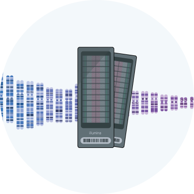
						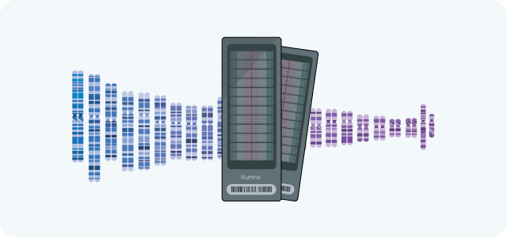
					</div>
					<div class="text">
						<p class="textTitle">유전자 해독</p>
						<p class="dot">1인당 60만개 이상의 전장게놈 SNP 해독이 가능한 Illumina Genome-wide SNP Array ASA chip 사용</p>
						<p class="textTitle">전장 게놈파일 소유</p>
						<p class="dot">검사결과만이 아닌 해독된 전체 유전자 파일을 개인이 자유롭게 관리할 수 있습니다.</p>
						<p class="textTitle">대용량 유전체 정도 관리</p>
						<p class="dot">샘플혼동 추적, 샘플 오염도 및 판독률 기술 보유 SNP 에러율 측정 기술 보유</p>
					</div>
				</li>
				<li>
					<div class="img">
						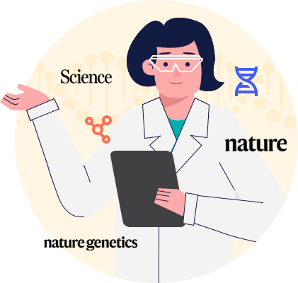
						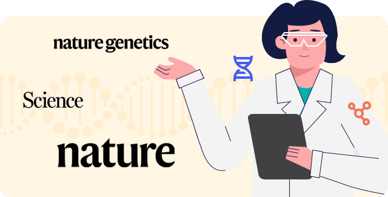
					</div>
					<div class="text">
						<p class="textTitle">인공지능(AI) 기반 유전체 분석</p>
						<p class="dot">유전자 마커 공개 데이터베이스 정보 및 자체 질병마커 선정 알고리즘을 통해 선별된 유전자 영향력 데이터베이스 구축하고 한국인 15만명,
						영국공개 코호트 유전체 정보 50만건 이상의 유전자 및 역학 자료 이용한 유전적 영향력 분석하여 예측 모델을 확립하였습니다.</p>
						<p class="textTitle">유전체 분석 전문가 보유</p>
						<p class="dot">질병관리본부 출신 연구자, 인공지능 전문가 등을 포함하여 질병 유전체 분석 경험 보유한 석박사급 연구원으로 구성한 분석팀을 보유하고 있습니다.
						해당 팀원들은 Nature 등 주요 저널에 약 80편 이상의 연구 과를 보유하였습니다.</p>
					</div>
				</li>
			</ul>
			<p class="subTitle">데이터 보안성을 고려한 네이버 클라우드 구축</p>
			<div class="wrap no2">
				<div class="col col1">
					<div class="box">
						
						
					</div>	
				</div>
				<div class="col col2">
					<div class="box">
						<p class="textTitle">클라우드 제공 보안 서비스</p>
						<p class="dot">클라우드 기본 보안 시스템 이외 Security Monitoring 활동을 위해 IPS, IDS, WAF, Anti-Virus의 보안 서비스를 활용 중입니다.</p>
					</div>
					<div class="box">
						<p class="textTitle">데이터 보안성 확보</p>
						<p class="dot">클라우드 데이터베이스를 활용하여 스토리지 자체 암호화, 이중화 구성, 자동백업, 타 리전으로의 소산백업 등의 장치를 통해 수집되는 데이터의 가용성 및 무결성 확보하였습니다.
						그 외에 개인식별정보, 중요 정보는 국제 표준 인증 암호화 솔루션을 활용하여 실시간 암호화되어 저장하여 만일의 상황에 대비하고 있습니다</p>
					</div>
				</div>
			</div>
			<p class="subTitle">정보보호 활동</p>
			<div class="wrap no3">
				<div class="col col1">
					<div class="box">
						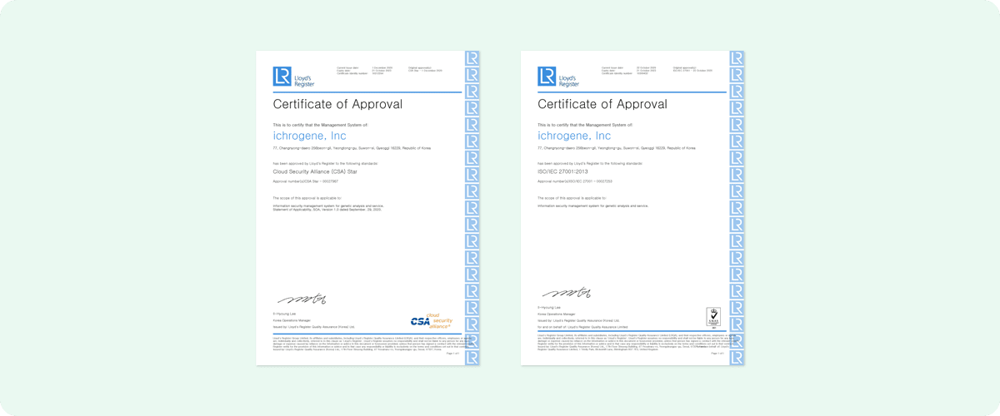
						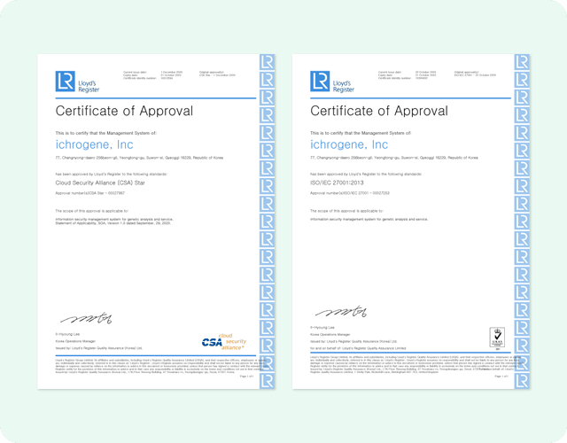
					</div>	
				</div>
				<div class="col col2">
					<div class="box">
						<p class="textTitle">ISO 27001</p>
						<p class="dot">정보보호 관리체계 국제표준인증 최초 인증 이후 2022년03월 재인증을 완료하였습니다. 이는 아이크로진 전반적인 보안 수준에 대해 인증 받았음을 의미합니다.</p>
					</div>
					<div class="box">
						<p class="textTitle">CSA Star</p>
						<p class="dot">클라우드 기반 유전자 서비스 역량 수준을 측정하는 글로벌 보안 인증으로 최초 인증 이후 2022년 03월 재인증을 완료하였습니다. 이는 클라우드 기반으로 하는 서비스에 대해 보안관리 활동이 효과적으로 수행되고 있음을 의미합니다.</p>
					</div>
				</div>
				<div class="box">
					<p class="textTitle">정기적인 모니터링 활동과 감시</p>
					<p class="dot">물리적 또는 기술적 사고에 대비하여 웹서비스 모니터링을 통해 서비스의 점검을 자동화하고 활동 로그를 분석하여 침해사고, 혹은 장애사항이 없었는지 감시 및 보완활동을 주기적으로 시행하고 있습니다.개인정보 처리 시스템은 허가된 자들만 접근 가능하고 고객의 정보가 보관되어 있는 데이터베이스는 접근제어를 통해 실시간 로깅되고 있습니다. <br>
					이 외에도 내부 관계자들의 작업 단말기에도 백신 설치, 데이터 활용 감시 등의 보안 활동을 정기 또는 필요시 수행하고 있습니다.</p>
				</div>
			</div>
			<p class="subTitle">제2형 당뇨 프리미엄 서비스 특허정보</p>
			<div class="wrap no4">
				<ul class="col col3 patent">
					<li class="box">
						<p class="textTitle">질병관리청</p>
						
						
						<p class="des">질병관리청 국립보건연구원은 감염병 및 만성질환 위험에 대비 및 대응하기 위한 보건 의료연구개발을 수행하는 보건복지부 소속기관으로 제2형 당뇨병을 비롯한 만성질환 원인 규명을 위한 최고 수준의 유전체 연구를 수행하고 있습니다.</p>	
					</li>
					<li class="box">
						<p class="textTitle">특허정보</p>
						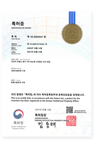
						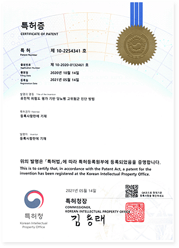
						<p class="des">만성질환 리포트는 질병관리청 국립보건연구원에서 수행한 제2형 당뇨병 위험군 진단 방법과 관련된 특허 (특허 제 10-2254341호)를 기술 이전하여 개발되었습니다.</p>
					</li>
					<li class="box">
						<p class="textTitle">계산방법</p>
						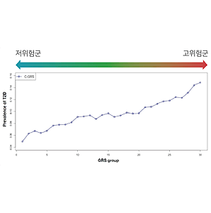
						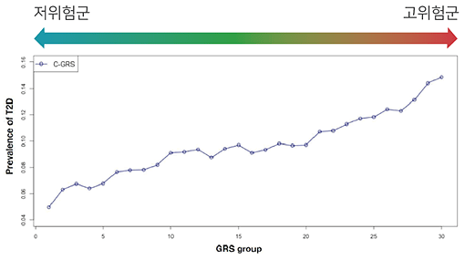
						<p class="des"><strong>∑G×A</strong><br>총 231개 유전자 변이의 유전적 효과 (G)와 개인의 고유한 유전자형 내 영향력을 가진 대립인자의 수(A)를 곱한 값을 합산하여 유전적 위험도를 예측합니다.</p>
					</li>
				</ul>
				<p class="textTitle">분석방법</p>
				<p class="dot">한국인 15만명 이상의 유전자 정보를 바탕으로 제2형 당뇨병과 관련된 175개 유전변이 및 공복혈당과 관련된 56개 유전변이를 사용하여 제2형 당뇨병의 유전적 위험도를 분석합니다.</p>
				<p class="dot">공복혈당의 유전적 위험도가 가장 높은 고위험군(상위 1%)의 경우 일반적인 사람들에 비해 제2형 당뇨 발병 위험도가 2.27배 증가하며, 제2형 당뇨의 유전적 위험도가 가장 높은 고위험군은 제2형 당뇨 발병 위험도가 4.58배 증가합니다.</p>
				<p class="dot">특히, 공복혈당과 제2형 당뇨의 유전적 위험도가 모두 높은 복합적 고위험군은 제2형 당뇨 발병 위험도가 8.08배 증가합니다. 본 리포트는 ①공복 혈당 및 ②제 2형 당뇨의 유전적 위험도를 단일 분석하여 제2형 당뇨 발병을 예측하며, 각각의 결과를 ③통합 분석하여 보다 더 정확한 결과를 제공합니다.</p>
				<div class="col col2">
					<div class="box">
						<p class="imgTitle">공복혈당 유전적 위험도</p>
						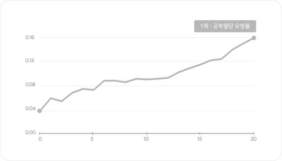
					</div>
					<div class="box">
						<p class="imgTitle">제2형 당뇨 유전적 위험도</p>
						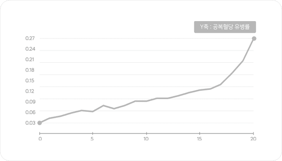
					</div>
				</div>
				<div class="col col1">
					<div class="box">
						<p class="imgTitle">통합 유전적 위험도</p>
						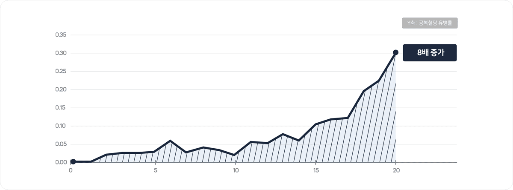
					</div>
				</div>
				<p class="imgTitle">질병관리청 제2형 당뇨병 위험도 분석 결과</p>
				<div class="tableWrap">		
					<table class="table1">
						<caption></caption>
						<colgroup>
							<col style="width:16%">
							<col style="width:16%">
							<col style="width:16%">
							<col>
							<col style="width:16%">
							<col style="width:18%">
						</colgroup>
						<thead>
							<tr>
								<th>분석 종류</th>
								<th>대상항복</th>
								<th>유전적 위험도</th>
								<th>교차비</th>
								<th>95% 신뢰 구간</th>
								<th>통계적 유의성(p-value)</th>
							</tr>
						</thead>
						<tbody>
							<tr class="first">
								<td rowspan="8">단일</td>
								<td rowspan="4">공복혈당</td>
								<td>상위20%</td>
								<td>1.67</td>
								<td>1.57-1.77</td>
								<td>8.96E-66</td>
							</tr>
							<tr>
								<td>상위 10%</td>
								<td>1.9</td>
								<td>1.77-2.04</td>
								<td>4.45E-59</td>
							</tr>
							<tr>
								<td>상위5%</td>
								<td>2.04</td>
								<td>1.87-2.23</td>
								<td>4.65E-59</td>
							</tr>
							<tr class="line">
								<td>상위1%</td>
								<td>2.27</td>
								<td>1.92-2.69</td>
								<td>3.38E-21</td>
							</tr>
							<tr class="first">
								<td rowspan="4">제2형 당뇨</td>
								<td>상위20%</td>
								<td>2.27</td>
								<td>2.14-2.40</td>
								<td>1.39E-173</td>
							</tr>
							<tr>
								<td>상위 10%</td>
								<td>2.88</td>
								<td>2.70-3.08</td>
								<td>8.28E-221</td>
							</tr>
							<tr>
								<td>상위5%</td>
								<td>3.43</td>
								<td>3.17-3.71</td>
								<td>2.71E-204</td>
							</tr>
							<tr class="line">
								<td>상위1%</td>
								<td>4.58</td>
								<td>3.96-5.30</td>
								<td>1.61E-93</td>
							</tr>
							<tr class="first">
								<td rowspan="4">통합</td>
								<td rowspan="4">공복혈당<br>+<br>제2형 당뇨</td>
								<td>상위20%</td>
								<td>3.26</td>
								<td>2.91-3.66</td>
								<td>7.29E-91</td>
							</tr>
							<tr>
								<td>상위 10%</td>
								<td>4.34</td>
								<td>3.79-4.97</td>
								<td>1.54E-99</td>
							</tr>
							<tr>
								<td>상위5%</td>
								<td>5.28</td>
								<td>4.40-6.34</td>
								<td>2.75E-71</td>
							</tr>
							<tr class="line">
								<td>상위1%</td>
								<td>8.08</td>
								<td>4.55-14.35</td>
								<td>9.33E-13</td>
							</tr>
						</tbody>
					</table>
				</div>
				<p class="textTitle">발생률 계산방법</p>
				<p class="dot">㈜아이크로진의 아이디닥터 프리미엄 리포트는 질병관리청 한국인 15만명의 역학 정보와 유전자형 정보를 바탕으로 유전적 위험도(위험,보통,좋음)별 실제 발생률을 계산하여 보다 정확한 정보를 제공합니다.</p>
				<div class="techBox imgWrap scrollNone">
				    <ul class="col col3">
				        <li>
				            <div class="titlebox">㈜아이크로진</div>
				            <div class="textWrap">
				                <p class="title">계산방법</p>
				                <p class="des">검사자의 발생률 = 한국인 15만명 중 검사자와 동일한 연령, 유전자형을 가진 사람의 실제 발생률</p>
				                <div class="line"></div>
				                <p class="title">제2형 당뇨</p>
				                <div class="img">
				                    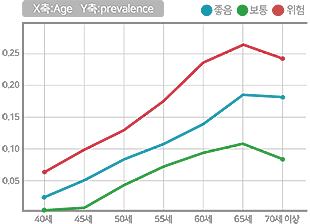
				                </div>
				                <div class="line"></div>
				                <p class="title">유전형-발생률 연계 여부</p>
				                <p class="des">검사자와 동일한 유전자형과<br>
				                    실제 발생률을 연계</p>
				                <div class="line"></div>
				                <p class="title">유전적 위험도</p>
				                <p class="des">모든 유전적 위험도 별 발생률 제공</p>
				            </div>
				        </li>
				        <li>
				            <div class="titlebox">A사</div>
				            <div class="textWrap">
				                <p class="title">계산방법</p>
				                <p class="des">검사자의 유병률 = 통계자료기반 한국인 평균 유병률 x 검사자의 위험도<br><br></p>
				                <div class="line"></div>
				                <p class="title">제2형 당뇨</p>
				                <div class="img">
				                    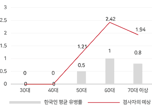
				                </div>
				                <div class="line"></div>
				                <p class="title">유전형-발생률 연계 여부</p>
				                <p class="des">검사자의 유전자형과 무관한<br>통계 평균값 반영</p>
				                <div class="line"></div>
				                <p class="title">유전적 위험도</p>
				                <p class="des">검사자의 위험도만을 제공</p>
				            </div>
				        </li>
				        <li>
				            <div class="titlebox">B사</div>
				            <div class="textWrap">
				                <p class="title">계산방법</p>
				                <p class="des">검사자의 발병률 = 통계자료기반 한국인 평균 발병률 x 검사자의 위험도<br><br></p>
				                <div class="line"></div>
				                <p class="title">제2형 당뇨</p>
				                <div class="img">
				                    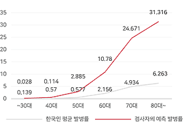
				                </div>
				                <div class="line"></div>
				                <p class="title">유전형-발생률 연계 여부</p>
				                <p class="des">검사자의 유전자형과 무관한<br>통계 평균값 반영</p>
				                <div class="line"></div>
				                <p class="title">유전적 위험도</p>
				                <p class="des">검사자의 위험도만을 제공</p>
				            </div>
				        </li>
				    </ul>
				</div>

				<p class="textTitle">예측 정확도</p>
				<p class="dot">아이디닥터 프리미엄 리포트는 질병관리청 한국인 15만명의 유전자형 정보를 바탕으로 예측한 고위험군(상위 1%)과 실제 역학 정보를 비교하여 85%의 높은 예측 정확도를 보유하고 있습니다.</p>
				<p class="tableText">(예)</p>
				<table class="table2">
					<caption></caption>
					<thead>
						<tr>
							<th>구분</th>
							<th>유전적 고위험군</th>
							<th>실제 환자 수</th>
							<th>예측 정확도</th>
						</tr>
					</thead>
					<tbody>
						<tr>
							<td>상위 1%</td>
							<td>100명</td>
							<td>85명</td>
							<td>85.0%</td>
						</tr>
						<tr>
							<td>상위 5%</td>
							<td>500명</td>
							<td>357명</td>
							<td>71.3%</td>
						</tr>
						<tr>
							<td>상위 20%</td>
							<td>2,000명</td>
							<td>1,200명</td>
							<td>60.0%</td>
						</tr>					
					</tbody>
				</table>
				
			</div>
		</div>
	</div>
    <!-- //BODY -->
</body>
</html>